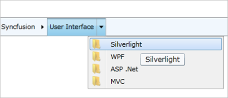

A ToolTip can be displayed for each HierarchyNavigator item.
Setting the ShowToolTip Boolean property to true in the HierarchyNavigator control will enable the ToolTips for all items.
|
XAML
<syncfusion:HierarchyNavigator ShowToolTip="True" x:Name="hierarchyNavigator1" /> |
|
C#
HierarchyNavigator hierarchyNavigatorControl1 = new HierarchyNavigator() { Height = 30 }; hierarchyNavigatorControl1.ShowToolTip = true; |

Figure 586: ToolTip for an item